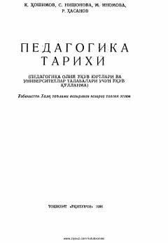

PTO'zbek pedagogikasi tarixi va milliy tarbiya an'analari haqida fundamental o'quv qo'llanma.
Ushbu o'quv qo'llanma o'zbek pedagogikasi tarixi, xalq ta'limi tizimi va milliy tarbiya an'analarining rivojlanish bosqichlarini ilmiy-tarixiy nuqtai nazardan yoritadi. Kitobda qadimiy Turkiston mutafakkirlarining pedagogik qarashlari hamda sovet davridagi ta'lim tizimining o'ziga xos xususiyatlari tahlil qilingan.